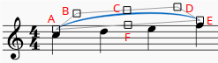
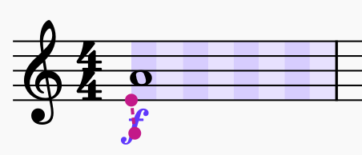
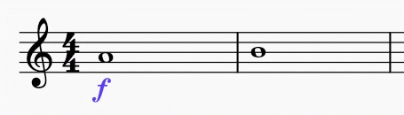
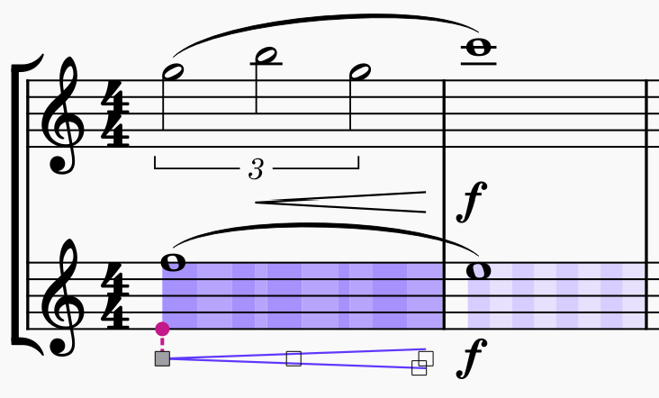
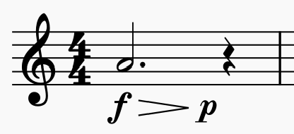
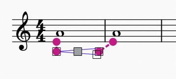

直接调整元素
本章介绍为排版目的微调元素在乐谱上 字面位置 的方法。更常见的 音乐编辑方法 在 输入与编辑文本 和 编辑音符与休止符 章节中介绍。
改变元素的位置
要微调元素在乐谱上的字面位置，可以：
要进入 编辑模式，可以：
- 在乐谱中的元素上 右键单击 → 编辑元素，或
- 在乐谱中选择一个元素，使用键盘快捷键 F2，或
- 在乐谱中选择一个元素，使用键盘快捷键 Alt+Shift+E（Mac：Option+Shift+E）
然后，在 编辑模式 中，按键盘方向键 Left Right Up Down，以 0.5 sp 的步长移动对象，或 * 直接编辑它（此方法不适用于音符、休止符，以及从“主面板：符号”添加的元素，见 其他符号 章节）。在乐谱中选择元素，按键盘方向键 Left Right Up Down 以小步长（0.1 sp）移动。与 Ctrl（Mac：Cmd）组合使用时，则以大步长（1 sp）移动。
在 页面排版概念 章节中了解关于间距单位（sp.）的更多信息。
改变元素的形状
要在添加到乐谱后改变诸如 连音线 和 延音线 等元素的形状：
- 单击要调整的连音线或延音线
- 单击并拖动元素周围出现的调整手柄（注：下图中的红色字母仅供参考）

注意：
- 手柄 B、C 和 D 改变曲线在该点的形状
- 手柄 A 和 E 调整元素的长度（也可以通过按 Shift+Left/Right 一次移动一个和弦/休止符的端点来实现）
- 手柄 F 重新定位整条线而不改变其形状或长度
如果你想改变连音线或延音线所连接的音符，推荐使用上述键盘快捷键（Shift+Left/Right）。这是同时改变连音线或延音线所包含音符的视觉范围和播放范围的最有效方式。
锚点
某些类型的项目——力度记号、力度变化线、速度文本、踏板标记——不必直接附着到音符或休止符上，也可以附着到时值内部的节奏位置。我们称之为 锚点（anchors）。
一般来说，项目不能直接添加到时值内部的锚点，而必须先添加到音符或休止符上，然后再移到所需位置。在锚点之间移动的键盘快捷键是 Shift+Left/Right（与在其他类型项目在音符之间移动时使用的快捷键相同）。锚点位置会作为真实节奏位置存储在文件中，因此当乐谱重新排版时，项目会停留在正确的位置。
如果你选中一个“可锚定”的项目并按住 Shift，你会看到该小节中可用锚点的可视化，显示为交替的深浅矩形。颜色由项目所属声部决定（所有声部为紫色，声部 1 为蓝色，声部 2 为绿色等）。每个切片代表一个可以锚定项目的节奏细分。

在锚点之间移动
要在锚点之间移动项目，按住 Shift 并按 Left 或 Right：

对于线条（力度变化线、踏板标记），两端可以独立移动。
默认情况下，显示的细分是拍号所确定拍值的一半（因此，在本例中，是四分音符拍的一半，即八分音符）。不过，其他谱表上节奏位置落在这些细分之外的音符也会显示锚点，这意味着你可以把项目对齐到其他谱表的音符上，无论它们处于什么位置：

把力度记号移动到“时值末尾”位置
使用 Shift+Alt+Left/Right，你不仅可以在节奏细分之间移动，还可以移动到每个细分的末尾。这是一个特殊位置；对于力度记号来说，一个时值的末尾与下一个时值的开头并不相同（后者可能有自己的力度记号——也可能是一个休止符）。这最常出现在类似这样的形式中：

要输入本例中的力度记号：
- 向音符添加一个 f 力度记号
- 向音符添加一条力度变化线；它会结束在休止符上
- 向力度变化线添加一个 p 力度记号（这会把它放在力度变化线的端点，即休止符上），或直接放在休止符上
- 选中该力度记号并按 Shift+Alt+Left，这会把它移动到前一个音符最后一个细分的末尾
注意，力度变化线不能移动到“时值末尾”位置；如果没有力度记号，这种区分就没有意义。因此，应移动力度记号，任何力度变化线都会随之移动。
为清晰起见，移动力度变化线或其他线条时，该项目所跨越的细分会以更深的颜色显示，这样你就能看到它跨越的范围：
